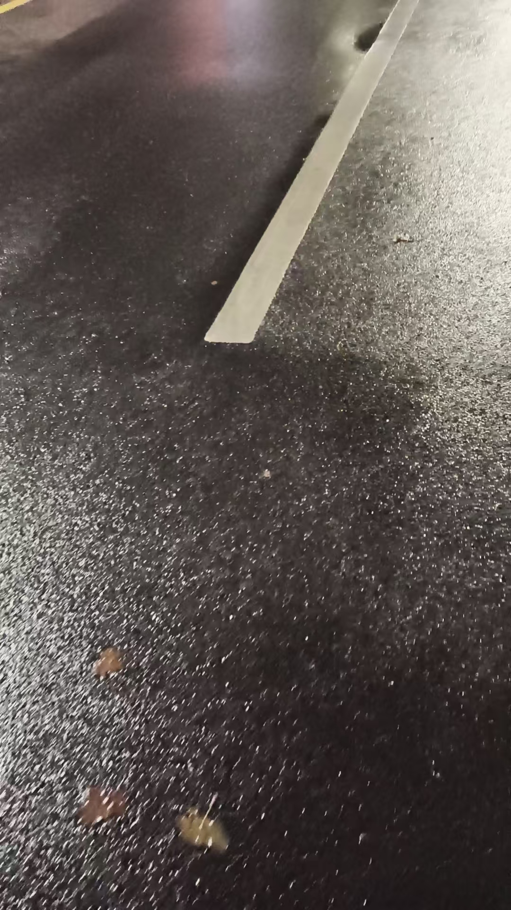

20261012成人必须拉手，净化大脑，身体，热能转化光能 照耀 打开脑屏
修炼修行符咒术法道家 原始对话记录现在叫调频
古人叫什么
大脑调频，古人叫觉
觉知
科委叫感觉思维同步
同频
我在练看牌
刚刚开始
还行，能入门了
一张牌，在整个大脑里慢慢转
总有一个位置，光照耀，能看清楚牌
找到稳定的解法就好了[鼓掌][鼓掌][鼓掌]
成人必须拉手，净化大脑，身体，热能转化光能
照耀
打开脑屏
也就是道家百日筑基，很重要
人体39岁以后，逐渐转衰
手脚逐渐发凉
不修，绝对不可能再有能量，放光
所以，我的方法，就是迅速使人体发热，获得这种高能
操作方法，就是把光手，伸进对方光体
指令光手，热起来
像浴桶里的加热器
很快对方就热起来了
身体越通透，各种眼，脑屏也越清楚
相辅相成
[憨笑][憨笑]
各种术我要亲自练成
才能知道成人，跟孩子，学习中的各种问题
就像做酒，并不是一成不变的做
而是能处理各种温度下，各种变化
一不小心，就做坏了
一发现不对，迅速补救，最终成功
这就是经验十足
[憨笑][憨笑]
一样精百样通
昨天陪女儿在万达玩了半天，
女儿说，考试的时候，脑屏会出现书本
照着抄就行
[憨笑][憨笑][憨笑]
没怎么训练，竟然成功了
孩子们考试不能使用脑屏
大致问题 就是不能灵活使用
也就是学艺不精
培训几天，各机构好多孩子反映
不如左脑机械记忆，
界面切换出现问题
也就是脑屏不能灵活使用
跟几个孩子聊过
确实，高维有监管
不能泄题
但脑屏的储存记忆，可以使用
左脑机械记忆，肯定能用
右脑储存记忆，也可以用
只有高维抄答案，这个违规
不能用
所以，要用对方法
我给孩子们大学生们押题
对照未来答案押题，学生记住了，这个不违规
有了付出
考试去抄答案，不行
为什么有文昌魁星
还有天聋地哑两童子
就是不泄题
孩子的储存记忆，要隔三差五抽出来，把储存的卡片抽出来，复习几遍
考试的时候才能灵活运用
成人脑屏灵活使用
问，我一会出去吗
看到宅亮
宅子外围都灰
有一条街，不长是亮的
我看了一下，这街不远，有个快递站，正好有个快递
也就是说，可以拿快递，其余时间宅家最合适
就这样灵活运用
比如，自己要去旅游
问合不合适
要去的地点白亮，就适合去
白亮去了会带来好运
灰，就不能去
去了，不仅行程不顺，回来也会带来霉运，预后做事也不顺利
脑屏自然出了一个事
一个研究生，跟他吵一架
[呲牙][呲牙][呲牙]
吵架是白亮的
不吵是灰暗的
那他们课题组今晚聚会喝酒
喝完了过来，跟他吵一架
[憨笑][憨笑][憨笑]
昨晚喝的住了院，一点数没有
过来 我肯定收拾他一顿
也是为他好
太岁炒的不便宜
三块一克
刚才，我进入一种空间，那里乌云密布
一会下雨，看着我淋湿了
果然，现在下雨了
不过没淋到我
我没出去
半年没下雨了
山东大旱
现在小麦都没种上
那个空间，感觉在天上
以前我用同样的方法布过雨
那空间，我坐在那里，淋透了
也不避雨
我去改变他的状态
应该能改变现实状态
那个就是我
我给他打上蕃盖
铺上软坐
换上黄色佛衣
四周用软玻璃围上
挡住风雨
很温暖
在合十打坐
那个我淋湿的时候，无奈无助
是因为我刚才的心态不好
那学生发过照片来，还在喝酒，虽然昨天喝住院了，跟同学喝的
今晚，导师，院长都在
都知道他喝酒，只有他陪酒
不想喝不行
很无奈的陪酒
我一阵心生烦恼
造成了那一维的自己，出了无奈无助的状态
现在改好了
我去给他诵华严经
祝他早日解脱
[呲牙][呲牙][呲牙][呲牙]
祝自己解脱
拾佰仟万亿，无数无量无边分身我佛，去度我那个自己迅速成就，立地成佛
天山的我，高我，原来那状态
怪不得不能神通具足
现在应该改变了
兼修兼悟
无限能量，无限智慧，无限宝藏皆入我高维佛身
强壮，高大，福德无限
开智开悟，神通广大
[呲牙][呲牙][呲牙]
咋高我竟然不如我的肉身
怎么回事
是我肉身太勤奋了吧
第一次见这回事
哦[疑问][疑问]
又看到了
肉身跟佛身之间，有一段，是灰的
没修复
肉身亮的
佛身亮的
中间七八个距离
暗的
这就看到了以后的修法
把这中间一段修亮
高我都不亮
何况高高我，高高高我，高高高高我
[呲牙][呲牙]
没名字，只能这样描述
高我修复了
今晚就修复那六个层级
叫层级，都是平行的
不是纵列
无量无数无边
三千大千恒河沙数我分身化身
围绕其中六层级高我
加持，顾护，
一一细节修炼
透明，光化
逐渐放大光明
金色，彩色
放大光明
照耀三千大千世界恒河沙数三千大千世界
光光想耀，无穷无尽
没有一丝阴霾
这叫顿悟
心法细腻

雨下的太小了
太少
还是种不上小麦
光手伸进光体，就热了
我在练看牌。刚刚开始。还行，能入门了。
一张牌，在整个大脑里慢慢转。总有一个位置，光照耀。就那里，能把牌看清楚。他说，找到稳定的解法就好了。
他管这个叫调频。古人叫什么，他也说了——叫觉，叫觉知。科委的叫法是，感觉思维同步。同频。
接着是那句要紧的。"成人必须拉手，净化大脑，身体，热能转化光能，照耀，打开脑屏。"
他说这就是道家的百日筑基。人体三十九岁以后，逐渐转衰，手脚一天天发凉。"不修，绝对不可能再有能量，放光。"
所以他的法子，是先让人迅速发热，拿到这种高能。方法很直白——"把光手，伸进对方光体。" 然后"指令光手，热起来。" 像浴桶里的加热器。很快，对方就热起来了。身体越通透，各种眼、脑屏也越清楚。相辅相成。
为什么要自己做，他也讲了。各种术我要亲自练成，才能知道成人、跟孩子，在学的时候会遇到什么问题。像做酒——不是一成不变的做，是能处理各种温度下、各种变化。一不小心，就做坏了。一发现不对，迅速补救，最后成了。一样精，百样通。
孩子的脑屏，他说过一件。女儿说，考试的时候，脑屏会出现书本，照着抄就行。没怎么训练，竟然成了。
可孩子考试不能用脑屏。问题不在有没有，在不能灵活使用，界面切换不过来——学艺不精。他问过几个孩子，说法是，高维有监管，不能泄题。但脑屏里存的记忆可以用，左脑的机械记忆能用，右脑存的记忆也能用。只有照着答案抄，这个违规。
所以要用对方法。他给学生押题，是"对照未来答案押题，学生记住了，这个不违规"。得有付出。考试去抄答案，不行。文昌魁星边上还有天聋地哑两个童子——就是不泄题。孩子的储存记忆，要隔三差五抽出来，把卡片抽出来，复习几遍。考试的时候，才灵活。
成人的脑屏，是随时用的。他举了件顺手的小事。问，我一会出去吗。看到宅亮，宅子外围都灰。有一条街，不长，是亮的。他看了一眼，这街不远，有个快递站，正好有个快递。也就是说，可以拿快递，其余时间宅家最合适。就这样灵活运用。要去旅游，问合不合适：地点白亮，就适合去，白亮去了会带来好运；灰，就不能去，去了行程不顺，回来也带霉运。
脑屏还自然出了个事。一个研究生，跟他吵一架。他说，吵架是白亮的，不吵是灰暗的。那课题组今晚聚会喝酒，喝完了过来，跟他吵一架。昨晚喝得住进了院，一点数没有。"过来 我肯定收拾他一顿。也是为他好。" 太岁炒的不便宜，三块一克。
再往下，是一段说给另一个自己的话。他进入一种空间，那里乌云密布，一会下雨，看着自己淋湿了。果然，现在下雨了。不过没淋到他——他没出去。半年没下雨了，山东大旱，小麦都没种上。
那空间，感觉在天上。以前他用同样的方法布过雨。"那个就是我。" 他给那个我打上蕃盖，铺上软坐，换上黄色佛衣，四周用软玻璃围上，挡住风雨。很温暖，在合十打坐。那个我淋湿的时候，无奈无助，是因为刚才他心态不好。现在改好了。他去给他诵华严经，祝他早日解脱。拾佰仟万亿，无数无量无边分身我佛，去度那个自己迅速成就，立地成佛。
还有高我。天山的我，高我，原来那状态，怪不得不能神通具足。"咋高我竟然不如我的肉身，怎么回事，是我肉身太勤奋了吧。" 又看到了：肉身跟佛身之间，有一段，是灰的，没修复。肉身亮的，佛身亮的，中间七八个距离，暗的。这就看到了以后的修法——把中间这一段修亮。"高我都不亮，何况高高我，高高高我，高高高高我。" 没名字，只能这样描述。
今晚就修复那六个层级。叫层级，都是平行的，不是纵列，无量无数无边。三千大千恒河沙数我分身化身，围绕其中六层级高我，加持，顾护，一一细节修炼。透明，光化。逐渐放大光明。金色，彩色。放大光明，照耀三千大千世界。"这叫顿悟。心法细腻。"
最后一行是天气。雨下的太小了。太少。还是种不上小麦。